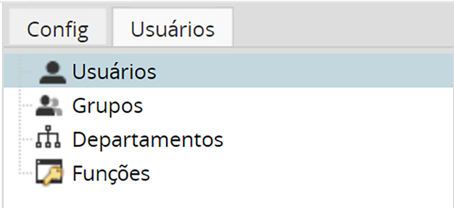
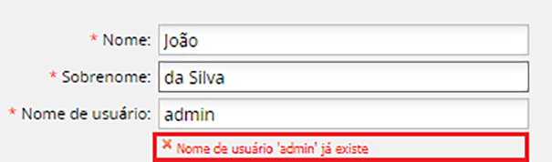
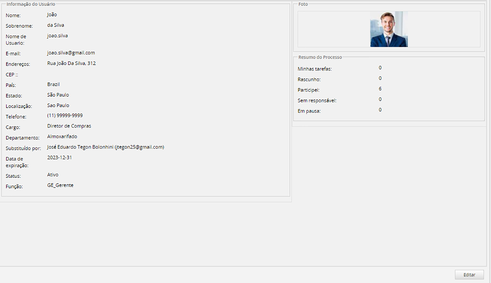
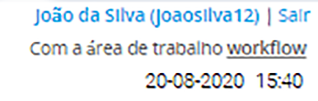

Somente as pessoas registradas como usuários têm o direito de acessar o Gestor Express. Esses usuários podem ser organizados em grupos e departamentos . O tipo de atividades que os usuários podem realizar e a interface que os usuários veem são determinados por suas funções .
A Guia Usuários
Para administrar usuários, grupos e departamentos, faça login como "administrador" ou outro usuário que tenha a permissão PM_USERS em sua função. Em seguida, vá para a guia Usuários na barra lateral no menu Admin :

Usuários: Uma conta de usuário no Gestor Express geralmente representa uma pessoa na organização, mas também pode representar uma conta com privilégios especiais, como a conta "admin".
Grupos: Os usuários podem ser atribuídos a zero, um ou mais grupos. Um grupo de usuários simplifica a atribuição de usuários a tarefas. Por exemplo, um processo de "Help Desk" pode envolver um grupo de funcionários de suporte ao cliente, todos pertencentes a um grupo chamado "Suporte ao cliente".
Departamentos: organiza os usuários em uma estrutura organizacional hierárquica. Um usuário só pode pertencer a um departamento.
Funções: Permite definir funções personalizadas com diferentes níveis de permissões, para que as funções e privilégios de diferentes usuários possam ser facilmente controlados e gerenciados.
Experiência do usuário: esta é uma opção para usar uma interface simplificada para a caixa de entrada de processos. Para obter mais informações, visite Experiência do usuário
Usuários
Para ver a lista de usuários registrados no workspace atual, vá para Admin => Usuários => Usuários.
As colunas a seguir fornecem informações sobre as contas de usuário:
Nome de usuário: exibe o nome de usuário, que é usado para efetuar login no Gestor Express e identificar o usuário.
Nome Completo: Exibe o sobrenome e o nome de cada usuário.
Status: Exibe o status do usuário: Ativo , Inativo ou Férias
Função: Exibe a função atual de cada conta de usuário. Existem três funções padrão: OPERATOR, SUPERVISOR e ADMINISTRADOR. As contas de usuário atribuídas à função ADMINISTRADOR podem criar, modificar ou excluir processos existentes. As contas de usuário atribuídas à função OPERATOR são destinadas ao modo de produção, com acesso limitado à interface INÍCIO. Funções adicionais podem ser definidas para dar aos usuários um conjunto diferente de permissões.
Departamento: Exibe o departamento ao qual o usuário pertence.
Último Login: Exibe a última vez que o usuário fez login.
# Processos: Exibe o número de processos em que o usuário participou (ou seja, foi designado para trabalhar).
Data de vencimento: Exibe a data em que a conta do usuário está programada para ser desativada.
Para pesquisar usuários, use o campo no canto superior direito da janela Usuários:
Pesquisar: Para encontrar usuários, insira o texto encontrado no nome completo, nome de usuário ou e-mails dos usuários. Depois de inserir o texto na caixa Pesquisar, pressione Buscar para filtrar a lista de usuários. Para remover o filtro, exclua o texto e pressione Buscar novamente. Para fazer uma pesquisa de curinga, use "_" (um sublinhado) para representar qualquer caractere único e "%" (um sinal de porcentagem) para representar qualquer número de caracteres, incluindo espaços e zero caracteres. Por exemplo, "an%o" encontraria "Janio Souza", "anderson@gestorexpress.com.br" e "Janete Pontes". Para pesquisar os caracteres literais "_" e "%", use "\_" e "\%". Observe que a pesquisa não diferencia maiúsculas de minúsculas.
Alterando a lista de usuários
Por padrão, os usuários são listados de acordo com a ordem em que são encontrados na tabela do banco de dados; no entanto, a tabela pode ser reordenada por coluna clicando no cabeçalho da coluna. Para classificar a coluna em ordem crescente ou decrescente, clique na seta para baixo à direita do rótulo do cabeçalho e selecione Ordem Ascendente ou Ordem Descendente no menu suspenso.
Para alterar quais colunas são exibidas na lista Usuário, clique na seta para baixo no cabeçalho de uma coluna e selecione Colunas no menu suspenso. Em seguida, marque ou desmarque as caixas de seleção ao lado das colunas a serem exibidas na lista.
Criando novos usuários
Novos usuários podem ser criados dentro da interface do Gestor Express.
Para criar um novo usuário dentro da interface do Gestor Express, vá para Admin => Usuários => Usuários e clique no botão Novo na barra de ferramentas.
Preencha o seguinte formulário. Todos os campos obrigatórios são identificados por um asterisco (*).
Informação pessoal
Nome: O nome do usuário.
Sobrenome: o sobrenome do usuário.
Nome de usuário: O nome da conta que será fornecido quando o usuário efetuar login no sistema. Os nomes de usuário podem conter letras, números e sublinhados. Os nomes de usuário não diferenciam maiúsculas de minúsculas ao fazer login.
Observação: os nomes de usuário podem começar com um número, como "01Joao" .
O Gestor Express verificará se o nome de usuário já não está sendo usado por outro usuário:
Se o nome de usuário for atribuído a outro usuário, uma mensagem de erro vermelha será exibida:

E-mail: O endereço de e-mail do usuário, que pode ser usado para enviar notificações por e-mail sobre processos.
Endereço:
Código postal:
País: se for selecionado um país com um conjunto conhecido de locais, duas caixas suspensas extras serão exibidas para Estado ou Região e Local. Para outros países, insira as informações de localização no campo Endereço.
Telefone:
Cargo:
Substituído por: Escolha outro usuário que substituirá o usuário quando seu status mudar para "Inativo" ou "Em Férias" no menu suspenso. Todos os processos atualmente atribuídos ao usuário serão reatribuídos ao usuário substituto. Para obter mais informações, consulte Usando Substituído por abaixo.
Calendário: selecione o calendário do usuário , que determina as horas de trabalho do usuário e calcula a data de vencimento das tarefas.
Data de expiração: a data em que o usuário não poderá mais fazer login no Gestor Express. A data de expiração ajuda a proteger os dados de uma organização impedindo que usuários antigos acessem o Gestor Express.
Status: Se definido como Ativo , o usuário tem permissão de acesso ao Gestor Express. Se definido como Inativo, o usuário terá acesso negado ao login e não será designado para trabalhar em nenhum novo processo, até que o status seja alterado novamente para Ativo. Se definido como "Férias", a conta do usuário ficará inativa e não será atribuída a nenhum novo processo até a próxima vez que o usuário efetuar login no Gestor Express. Após o login, o usuário estará novamente disponível para ser atribuído a novos processos. Observe que apenas um usuário, como o "admin" que tem permissão para alterar o status de um usuário.
Função: Selecione a função do usuário, que determina quais funcionalidades e interfaces o usuário pode acessar no Gestor Express. O Gestor Express fornece as funções padrão OPERATOR , SUPERVISOR e ADMINISTRADOR, mas outras funções podem ser criadas para permissões mais personalizadas.
Observação: o campo Função do Administrador do sistema é definido como SYSTEM ADMINISTRATOR por padrão. Este campo não pode ser alterado; caso contrário, o seguinte alerta será exibido.
Mudar senha
Nova Senha: Uma string de pelo menos 5 caracteres, que pode incluir espaços e símbolos. Se a segunda senha não corresponder à primeira ou as senhas não atenderem aos requisitos definidos, uma mensagem de erro vermelha será exibida:
Caso contrário, se ambas as senhas corresponderem e as senhas atenderem aos requisitos:
Confirme Password: Uma string de pelo menos 5 caracteres, que pode incluir espaços e símbolos. Se a segunda senha não corresponder à primeira ou as senhas não atenderem aos requisitos definidos, uma mensagem de erro vermelha será exibida:
Opções de conta
Para forçar o usuário a alterar sua senha no próximo login, marque a caixa O usuário deve alterar a senha no próximo login. Quando o usuário inserir suas credenciais, o Formulário de Alteração de Senha será exibido:
Não é necessário fazer nenhuma configuração adicional para forçar os usuários a alterar suas senhas.
Perfil
Foto: Uma foto de perfil com no máximo 32 MB pode ser carregada. As extensões .png, .jpg, .gif são suportadas. Clique em para procurar uma foto no computador e enviá-la para o perfil do usuário.
Após preencher as informações do usuário, clique em Salvar para criar a nova conta de usuário.
Resumo da conta de usuário
O Console da página Usuário Administrador mostra informações sobre cada usuário quando você clica na opção Resumo. Ele mostrará um resumo das informações do usuário e estatísticas sobre o número de processos em que o usuário participou. Habilite esta opção clicando no nome do usuário:
O Resumo do usuário exibe as seguintes informações:

Guia Resumo:
Informações do usuário: Exibe os nomes do usuário, endereço, números de telefone, etc.
Resumo do Processo: Exibe informações sobre o status do processo em que o usuário participou.
Foto: Se uma foto do usuário foi carregada, ela será exibida aqui.
Guia Grupos: Exibe os grupos aos quais o usuário pertence. Observe que os usuários só podem ser membros de um departamento, mas podem ser membros de vários grupos.
Guia Autenticação: Exibe a fonte de autenticação do usuário.
Personalizando as informações do usuário
Usando Substituído por
O campo Substituir por designa outro usuário, que substituirá o usuário quando seu status mudar para Inativo ou Férias.
O exemplo a seguir demonstra como Substituir por funciona:
Crie um processo com pelo menos 2 tarefas.
Crie três usuários, por exemplo, "João Silva", "Emerson Silvério" e "Jonny Siqueira". Atribua João e Jonny à primeira e segunda tarefas, respectivamente.
Edite o perfil de usuário de João Silva e selecione Jonny Siqueira no campo substituir por. Quando João Silva estiver inativo ou de férias, Jonny Siqueira o substituirá, levando seus processos.
Agora comece um processo com Emerson Silvério. Em seguida, altere o status de João Silva para Inativo, portanto, quando um processo for roteado da primeira tarefa para a segunda tarefa, ele será atribuído a João Silva, pois Emerson Silvério agora tem um status Inativo.
Considerações antes de usar Substituído por
Leve em consideração o seguinte:
A função Substituir por não funciona se nenhum usuário estiver selecionado no campo Substituir por no perfil do usuário.
A funcionalidade de Substituído por não tem efeito em tarefas com as regras de atribuição de Autoatendimento ou Autoatendimento por Valor configuradas. Nesses tipos de atribuições, nenhum usuário é atribuído à tarefa por padrão.
Ao atribuir um grupo a uma tarefa, certifique-se de que os usuários configurados para substituir outros usuários estejam incluídos nesse grupo. Se usuários individuais forem atribuídos a essa tarefa, Substituir por não funcionará.
Editando as informações do usuário
Existem três maneiras de editar as informações de um usuário:
Usando a interface do usuário.
Acessando a Opção Resumo.
Acessando as Opções do Usuário localizadas no canto superior direito da tela.
Observe que os processos existentes continuarão exibindo as informações antigas. As alterações nas informações do usuário serão refletidas apenas em novos processos ou quando os processos existentes forem roteados para a próxima tarefa após a alteração. Por exemplo, se o administrador alterar o nome do usuário de "joao.silva" para "joaosilva12", a alteração será refletida apenas nos processos criados após a alteração, conforme mostrado na imagem abaixo.
Usando a interface do usuário
Faça login com um usuário que tenha a permissão PM_USERS em sua função e vá para Usuários. Selecione o usuário que será editado e clique em Editar. Lembre-se que se nenhum usuário for selecionado, a opção Editar permanecerá desabilitada.
Acessando as opções de resumo
Para editar as informações do usuário, um novo botão Editar foi adicionado:
Acessando as opções do usuário
No canto superior direito da tela, o nome de usuário do usuário atual é mostrado. Ao clicar no nome, o usuário será redirecionado para a seção de informações do usuário. Somente usuários com a permissão ADMINISTRADOR atribuída à sua função podem acessar esta opção no final do formulário:

Excluindo usuários
Para excluir a conta de um usuário, três condições devem ser atendidas:
A conta do usuário não pode ser membro de nenhum grupo.
A conta do usuário não pode ter atividades atribuídas ou concluídas.
A conta do usuário não pode ser atribuída a uma entrada da web.
Caso contrário, o seguinte alerta será exibido:
Geralmente, não é recomendado excluir contas de usuários, pois os registros de usuários devem ser mantidos para fins históricos. Em vez disso, é recomendável desativar a conta do usuário alterando seu status de Ativo para Inativo.
Habilitando/Desabilitando Usuários
É possível habilitar ou desabilitar um usuário da lista de usuários sem alterar os dados no banco de dados, o que é útil se o usuário não precisar ser excluído.
Antes de selecionar um usuário da lista, a opção Status será exibida como uma opção inativa:
Selecione um usuário da lista e a opção Status mudará para a opção Desativar:
Clique na opção Desativar e o usuário terá o rótulo Inativo:
Para habilitar o usuário clique na opção Habilitar no menu:
Atribuindo grupos a usuários
É possível atribuir grupos a usuários diretamente da lista de usuários:
Ao escolher um usuário da lista, a opção Grupos será habilitada. Clicar em Grupos abrirá uma janela listando o grupo ao qual o usuário específico pertence.
Para atribuir grupos, clique no botão atribuir grupo e uma janela dividida será exibida. Na coluna da esquerda serão listados os grupos disponíveis e na coluna da direita serão listados os grupos atribuídos:
Atribuindo fontes de autenticação a usuários existentes
A fonte de autenticação pode ser atribuída a partir da lista de usuários. Escolha um usuário da lista e o botão Autenticação será ativado:
Para obter mais informações sobre esta opção, consulte esta documentação.
Grupos
Os grupos são uma maneira de organizar os usuários e simplificar a atribuição de tarefas a vários usuários. No processo de exemplo de solicitação de compra, a tarefa "Iniciar tarefa" pode ser atribuída ao grupo "Funcionários", que inclui todos na organização. Dessa forma, qualquer pessoa na organização pode iniciar um caso de solicitação de compra. Se a organização tiver dois contadores e ambos estiverem atribuídos à tarefa "Gerar recibo", um grupo "Contadores" poderá ser criado e atribuído à tarefa em vez de atribuir cada contador individualmente. A atribuição de grupos, em vez de usuários individuais, eliminará muitos problemas para os projetistas de processos, pois pode ser difícil lembrar de incluir cada usuário individual ao atribuir tarefas.
Nota: Leve em consideração que o Gestor Express NÃO suporta subgrupos. Portanto, grupos de usuários não podem ser organizados hierarquicamente e grupos aninhados não podem ser criados.
A atribuição de tarefas a grupos em vez de usuários individuais é muito mais flexível, pois cada processo não precisa ser modificado quando as contas de usuário são desativadas ou modificadas. Os grupos podem ser muito convenientes quando há mudanças frequentes de pessoal em uma organização. Se várias tarefas forem atribuídas a um determinado gerente em dezenas de processos, quando esse gerente for transferido, cada tarefa terá que ser reatribuída ao novo gerente individualmente. Por outro lado, se as tarefas forem atribuídas ao grupo "Gerente", a única alteração será a troca de um usuário no grupo.
Criando grupos
Para ver a lista de grupos, vá para Admin => Usuarios => Grupos.
Para criar um novo grupo, clique no botão Novo no canto superior esquerdo da lista de grupos. Na caixa de diálogo, insira o nome do novo grupo.
Depois de criar um grupo, ele aparecerá na lista de grupos.
Ativar e Desativar Grupos
Para editar o nome e o status de um grupo, primeiro selecione o grupo na lista e clique no botão Editar na barra de ferramentas.
Da mesma forma, um grupo pode ser removido selecionando-o primeiro e clicando em Excluir na barra de ferramentas.
Uma janela pop-up verificará se o grupo não está atribuído a uma tarefa antes de excluí-la.
Defina o Status como Ativo se o grupo estiver em uso, caso contrário, defina como Inativo. Se Inativo, nenhuma tarefa atribuída ao grupo pode ser executada. Observe que quando o status de um usuário é definido como Inativo, ele não pode fazer login ou usar o Gestor Express. Quando o status de um grupo é definido como Inativo, no entanto, os usuários atribuídos a esse grupo ainda podem efetuar login e usar o Gestor Express, mas não podem executar nenhuma tarefa atribuída ao grupo.
Quando um grupo é definido como Inativo, o status muda para Inativo na lista, mas o grupo não desaparece da lista:
Atribuindo usuários a grupos
Uma conta de usuário pode pertencer a zero, um ou vários grupos, e os grupos podem ter vários usuários. Em outras palavras, muitos grupos podem ser atribuídos a muitos usuários. A coluna Usuários exibe quantos usuários estão atribuídos a um grupo e a coluna Tarefas mostra a quantas tarefas o grupo foi atribuído.
Para adicionar um usuário ao grupo, primeiro selecione o grupo na lista. Em seguida, clique no botão Usuários no topo da lista. Uma nova janela aparecerá:
Clique em Atribuir Usuários para adicionar usuários ao grupo selecionado.
No lado esquerdo, a lista de usuários disponíveis será exibida.
Para atribuir um usuário, clique duas vezes no usuário e ele será enviado automaticamente para o painel direito. Você também pode selecionar o usuário e clicar na seta > para enviá-lo. Para cancelar a atribuição de um usuário, clique duas vezes no usuário ou clique na seta < .
Para fazer uma pesquisa sem distinção entre maiúsculas e minúsculas para um usuário específico, digite parte do nome ou sobrenome do usuário na caixa de texto Pesquisar e pressione Buscar. Para ver todos os usuários disponíveis novamente após fazer uma pesquisa, desmarque a caixa de texto Pesquisar e pressione Buscar.
Para remover um usuário de um grupo existente, clique no link Remover do grupo selecionado no lado esquerdo do painel e confirme na caixa de pergunta pop-up para remover o usuário.
Departamentos e Subdepartamentos
Os departamentos são outra maneira de organizar os usuários com base em uma organização hierárquica que determina a maneira e a extensão em que funções e responsabilidades são delegadas, controladas e coordenadas, bem como como as informações fluem entre os níveis de hierarquia em uma empresa. No Gestor Express, os departamentos devem representar as unidades da organização, e os funcionários de cada entidade (que irão atuar nos processos da empresa) devem ser atribuídos a esses departamentos. Criar os departamentos e definir os gerentes (Supervisor) para cada departamento indicará a quem os funcionários devem se reportar ao enviar informações que precisam de revisão ou aprovação de um supervisor de acordo com a organização hierárquica da empresa.
Um subdepartamento no Gestor Express representa uma unidade que depende de outra unidade na estrutura de uma empresa. A criação de subdepartamentos no Gestor Express também oferece aos administradores uma representação gráfica da estrutura da empresa.
Para gerenciar departamentos e subdepartamentos, faça login no Gestor Express com um usuário, como o "ADMINISTRADOR", que tenha a permissão PM_USERS em sua função . Em seguida, vá para Admin => Usuários => Departamentos para ver uma lista dos departamentos e o número de usuários atribuídos a eles.
Para departamentos, leve em consideração o seguinte:
Os usuários só podem ser atribuídos a um departamento, diferentemente dos grupos em que os usuários podem ser atribuídos a um ou mais grupos.
Os departamentos não podem ser atribuídos a tarefas em suas regras de atribuição.
Os processos no Gestor Express trabalham com os departamentos na atribuição da próxima tarefa usando o método de atribuição " Relatórios para". Nesse método, a próxima tarefa é atribuída ao supervisor imediato do funcionário que trabalhou na última tarefa.
O gerente de um departamento é definido automaticamente no campo Relatórios para todos os outros usuários do departamento. Se o departamento for um departamento de nível superior (o que significa que não possui um departamento pai), o campo Relatórios para o gerente será deixado em branco. Se o departamento tiver um departamento pai, o campo Relatórios do gerente será definido para o gerente do departamento pai.
Quando o gerente de um departamento é alterado, o campo Reportar a será atualizado automaticamente para todos os usuários do departamento e para quaisquer supervisores nos subdepartamentos.
Observação: se um subdepartamento não tiver um gerente atribuído e a próxima tarefa tiver o método de atribuição Reportar a, o mesmo funcionário será atribuído à próxima tarefa. O supervisor mais próximo na estrutura é designado para a próxima tarefa.
O Gestor Express precisa de um certo tempo para exibir dados quando a quantidade de informações é grande, por exemplo, quando há mais de 1.000 departamentos. O Mozilla Firefox pode entender esse comportamento como se o script tivesse parado de ser executado e exibirá a mensagem abaixo. Por favor, clique na caixa de seleção Não me pergunte novamente e clique no botão Continuar. O navegador aguardará até que os dados sejam carregados.
Criando um novo departamento
Para criar um novo departamento, clique no botão Novo. Digite o nome do novo departamento e clique em Salvar.
Para criar um subdepartamento em um departamento pai, primeiro selecione o departamento pai na lista e clique em Novo subdepartamento. Digite o nome do novo subdepartamento e clique em Salvar.
O subdepartamento aparecerá na lista, inserido em seu departamento pai:
Editando um departamento
Para editar um departamento:
Selecione o departamento na lista e clique na opção Editar no menu acima da lista.
Para editar o departamento, defina os seguintes campos no formulário abaixo:
Nome do Departamento: Um rótulo para identificar o nome do departamento.
Status: Este campo da caixa suspensa define se o departamento está ativo ou inativo.
Gerente: Este campo de caixa suspensa seleciona um gerente de uma lista de usuários do departamento. O valor padrão é "Sem gerente". Apenas um usuário pode ser designado como gerente.
Atribuindo usuários a departamentos
Para atribuir usuários a um departamento, vá para Admin => Usuários => Departamentos para ver a lista de departamentos. Selecione um departamento e clique em Usuários. A lista de usuários já atribuídos será exibida na janela que se abre:
Clique no botão Atribua um usuário para adicionar usuários ao departamento. Na janela que se abre, o painel esquerdo tem a lista de usuários disponíveis que ainda não estão atribuídos a nenhum departamento. Os usuários atribuídos ao departamento são listados no painel direito.
Selecione um usuário ou vários usuários na lista de usuários disponíveis e clique em > para adicioná-los ao departamento. Para adicionar todos os usuários disponíveis ao departamento, clique no botão >>. Se o departamento não tiver usuários, o primeiro usuário atribuído ao departamento será automaticamente definido como Supervisor do departamento por padrão. Veja a função Reportar a.
Para remover usuários de um departamento, selecione o(s) usuário(s) na lista à esquerda. Em seguida, clique em < para remover o(s) usuário(s) do departamento. Para remover todos os usuários do departamento, clique no botão <<. Lembre-se de que os usuários só podem pertencer a um departamento por vez, portanto, primeiro remova um usuário de um departamento antes de adicioná-lo a outro departamento.
Também é possível selecionar usuários e arrastá-los e soltá-los de um painel para outro para adicionar ou remover usuários do departamento.
Excluindo departamentos
Para excluir um departamento, vá para Admin => Usuários => Departamentos e selecione um departamento na lista e clique em Excluir. Na caixa de diálogo de confirmação, clique em Sim para excluir o departamento.
Nota: Se um departamento tiver subdepartamentos, primeiro exclua os subdepartamentos antes de excluir o departamento.
Configurando o Gerente do Departamento
Para atribuir um usuário como "Gerente" em um departamento ou subdepartamento, primeiro selecione o Departamento (ou subdepartamento) e clique em Usuários. Na lista de usuários, selecione um usuário e clique em Definir Gerente.
Para remover um gerente de um departamento, clique em Sem Gerente.
Na lista de departamentos, será exibido o nome de usuário do gerente e o número de usuários atribuídos a cada departamento: